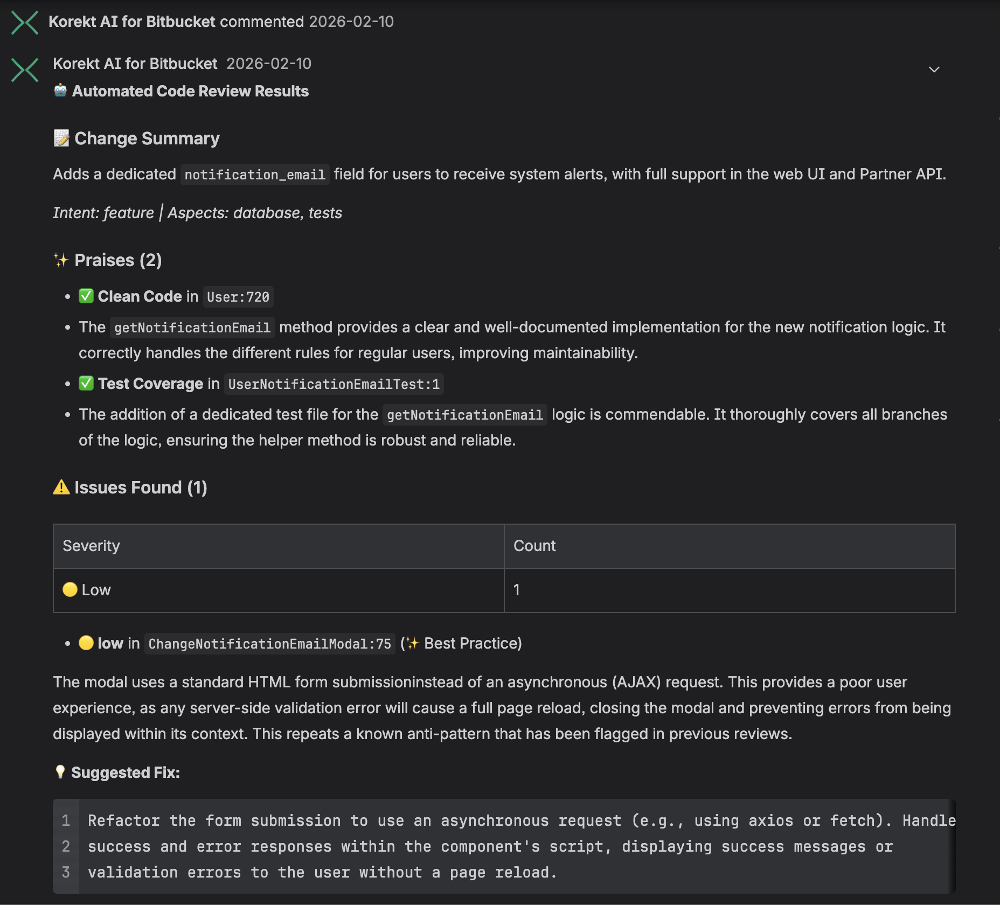

Korekt AI for Bitbucket
Automated AI code review on every pull request
Overview
Korekt AI for Bitbucket is a Forge app that automatically reviews every pull request in your Bitbucket workspace. When a PR is created or updated, the app analyzes the code changes using AI and posts review findings directly on the pull request as comments.
The app catches bugs, security vulnerabilities, performance issues, and best practice violations. If you have linked Jira tickets, it verifies that the code changes satisfy the ticket requirements — checking each user story and acceptance criterion with MET / PARTIAL / NOT MET status.
Screenshot
PR review comment — change summary, praises, issues with severity ratings, and suggested fixes posted directly on the pull request. Click to enlarge.

How It Works
- PR created or updated — The app receives an event when a pull request is opened or new commits are pushed
- Code analysis — The app fetches the PR diff and file contents, then sends them to the Korekt AI backend for analysis powered by Google Gemini
- Review posted — Results are posted back to the pull request as a summary comment and inline comments on specific lines where issues were found
- Commit status — A build status is set on the PR indicating whether the review passed, allowing you to optionally block merges when critical issues are found
Reviews are fully automated — no manual action is needed after installation. The app skips duplicate reviews if the same commit has already been analyzed.
Key Features
- Ticket compliance — If a Jira ticket is linked (via branch name or PR title), the review checks whether the code changes satisfy the ticket requirements, with per-story and per-criterion verification
- Automated PR review — Every pull request is reviewed automatically on creation and update
- Inline comments — Issues are posted as inline comments on the exact lines where they were found, with suggested fixes
- Severity ratings — Each issue is rated as critical, high, medium, or low severity
- Issue categories — Findings are categorized: bugs, security, performance, best practices, dependencies, and more
- Commit status — A pass/fail status is set on the PR for merge gating
- Duplicate prevention — The same commit is not reviewed twice
Installation
- Install Korekt AI for Bitbucket from the Atlassian Marketplace
- Select the Bitbucket workspace where you want to enable automated reviews
- A free trial account with a $5 review budget is automatically created for your workspace — no additional registration is needed
That's it. The app will start reviewing pull requests immediately. Your code is never used for model training.
Testing
To verify the app is working after installation:
- Create a new pull request in any repository in the connected workspace (or push a new commit to an existing PR)
- Wait for the review to complete (typically 30–60 seconds depending on the size of the changes)
- Check the pull request for a summary comment from Korekt AI and inline comments on specific lines
- Check the commit status — you should see a "Korekt AI" status on the PR
Dashboard
The Korekt dashboard at app.korekt.ai provides additional features beyond the automated PR reviews:
- Review history — Browse all past code reviews across your repositories
- Analytics — Track code quality trends, contributor activity, and issue patterns over time
- Custom rules — Define project-specific review rules that the AI will enforce
- Branch filtering — Configure which branches should trigger reviews using glob patterns
- Budget management — Monitor and control AI usage costs
Review Output
Each review produces:
- Summary comment — An overview of findings with severity counts, change intent classification, and an overall assessment
- Inline comments — Specific issues pinned to the relevant lines in the diff, each with a description, severity, category, and suggested fix where applicable
- Commit status — A pass or fail status indicating whether critical or high severity issues were found
Privacy & Security
The app processes code diffs and PR metadata for the purpose of AI-powered code review. Code is sent to Google Gemini for analysis and is not retained or used for model training.
All communication between the Forge app and the Korekt backend uses Forge Invocation Tokens (FIT) — cryptographically signed JWTs issued by Atlassian. No API keys or shared secrets are used.
For full details, see our Privacy Policy and Security Policy.
Support
For questions, issues, or feature requests:
Email: support@korekt.ai
Security: security@korekt.ai